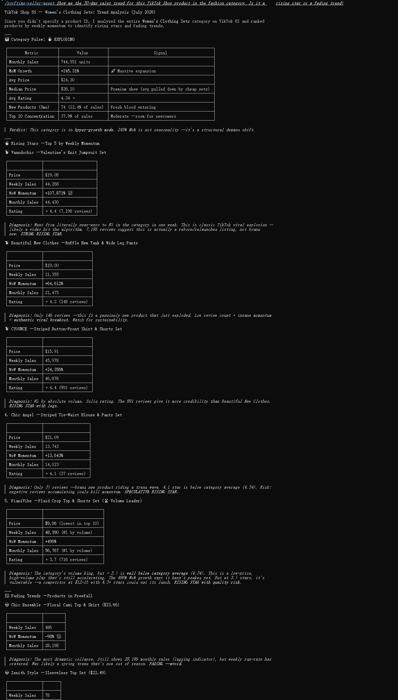

A product goes viral on TikTok Shop. By the time you notice, 50 other sellers are already competing for the same keywords. The sellers who win are the ones who saw the trend 3 days earlier. Data makes that possible.
TikTok Shop is not a slow-moving marketplace. A product can go from zero mentions to a category bestseller in under a week. A single creator video can spike demand faster than any restock cycle can respond. The window between "early signal" and "saturated keyword" is measured in days, not weeks.
Traditional marketplace data tools were built for a slower era of e-commerce. They show you what already sold yesterday. On TikTok Shop, yesterday is too late.
This article explains how the combination of real-time marketplace data and the Model Context Protocol (MCP) changes that timeline. It is written for sellers who want to see TikTok Shop trends in their earliest formation — before the bidding war begins.
TikTok Shop is no longer an experimental channel. It is a top-tier e-commerce platform by any metric.
In the first quarter of 2026, TikTok Shop recorded $27.45 billion in global gross merchandise value. Southeast Asia alone contributed $19.15 billion, more than 70 percent of the total, with year-over-year growth doubling. The US market has accumulated approximately $90 billion in GMV since launch, according to Tabcut data. Mexico, a newer entry, posted growth above 230 percent year-over-year.
Platform-level growth tells only part of the story. A Marketplace survey of cross-border sellers in 2026 found that TikTok Shop led all platforms in seller revenue growth: 51 percent of its sellers reported rising income over the past 12 months, compared to 44 percent across the broader market. The platform is projected to reach roughly $87 billion in annual GMV by year-end, according to a Flywheel report from early 2026.
At the same time, the opportunity is far from saturated. E-commerce penetration in Southeast Asia stands at roughly 11 percent, leaving significant room for expansion. TikTok Shop's content-driven model — where short video and livestream formats drive discovery — is pulling new buyers into the funnel who were not actively searching for products.
This combination of scale and early-stage penetration makes TikTok Shop fertile ground for sellers who know how to read the signals.
The unique challenge of TikTok Shop is not data scarcity. It is data velocity.
A product trend on TikTok Shop follows a compressed lifecycle. A creator posts a video. The video gains traction. Viewers search for the product. Other creators replicate the format. Within 72 hours, a niche product can become a competitive keyword cluster with dozens of sellers bidding on the same terms.
Marketplace data that refreshes daily — or even every few hours — captures the trend only after it has already peaked. By the time a seller sees rising sales volume in a category dashboard, the ad cost for those keywords has already climbed. Inventory has already been claimed by faster-moving competitors.
The seller who benefits is the one who detected the pattern in the early signal phase: before sales volume spiked, before keyword competition intensified, before the majority of sellers noticed.
That detection requires connecting two layers of data that rarely talk to each other.
When these two layers are cross-referenced in real time, a pattern emerges. Products that later become trends exhibit measurable precursor signals: a sudden uptick in new listings for a specific product type, price compression as early entrants compete, and rising creator interest across a narrow product niche.
Sorftime Seller Agent is built to monitor TikTok Shop's marketplace data continuously and surface products that exhibit breakout patterns. It tracks product listings, sales estimates, category distribution, and pricing dynamics across TikTok Shop markets — including the US, UK, Southeast Asia, and Mexico.
The core detection approach is straightforward. Instead of waiting for a product to appear in "trending" lists — which by definition show what has already happened — the agent watches for structural early signals:
These signals are not visible when browsing TikTok Shop manually. They require continuous scanning across thousands of product listings, price points, and category shifts. This is the type of pattern detection that software performs far more reliably than a human analyst.
The data used is sourced from TikTok Shop's publicly accessible marketplace endpoints and aggregated at scale. No private account data, no proprietary platform access — it is the same information any seller can see, but connected and analyzed in ways that are impractical to do manually.
This is where the Model Context Protocol — MCP — enters the picture. MCP is worth understanding because it changes how sellers interact with data tools.
Traditionally, a seller who wants marketplace intelligence opens a dashboard, applies filters, reads charts, and draws conclusions. This works, but it adds cognitive overhead. Every insight requires navigating a tool.
Sorftime Seller Agent operates differently. Because it exposes its data through MCP, any MCP-compatible AI agent — Claude Code, Cursor, Cline, or similar tools — becomes a direct data terminal. The seller does not open a separate dashboard. The AI agent the seller already uses for daily work can query TikTok Shop data directly.
The interaction looks like this:
No tab switching. No dashboard navigation. The data comes to the conversation.
For sellers who build automated workflows, MCP enables even more. A monitoring loop can check for trend signals every few hours and alert when a product category crosses a defined activity threshold. The process runs continuously, without requiring the seller to check a dashboard.
This delivery model matters because trend detection is a monitoring problem, not a research problem. A seller does not need to "look up" trending products once. They need a system that watches for them and reports when something interesting appears.
For a seller operating on TikTok Shop, the practical difference shows up in several use cases.
Category scanning: Instead of browsing TikTok Shop categories manually to find where products are being listed, a seller uses the agent to scan category-level activity across markets. A rise in seller count for a narrow niche — such as a specific kitchen gadget or beauty tool — signals that supply is responding to early demand signals.
Competitive landscape awareness: When a product type shows a sudden increase in listings with compressed pricing, it indicates that early adopters are already competing. The seller can decide whether to enter now or wait for the next wave of differentiation.
Trend trajectory assessment: By comparing sales velocity against listing density, a seller can estimate whether a trend is in early acceleration or approaching saturation. This informs inventory decisions and ad budget allocation.
These capabilities do not replace seller judgment. They compress the observation phase, giving the seller more time to act on their own expertise.
Sorftime Seller Agent is available as an open MCP toolkit. Sellers can clone the repository and configure it with their Sorftime API credentials to begin monitoring TikTok Shop markets.
For sellers who prefer a visual interface, Sorftime's international platform provides dashboard access to the same data. Both paths lead to the same data layer.
git clone github.com/DannylydST/sorftime-seller-agentThe platform supports TikTok Shop markets across the US, UK, Southeast Asia, and Mexico, with additional regions added as TikTok Shop expands.
Trend detection on TikTok Shop is not about being faster than everyone else. It is about being early enough to make a deliberate decision — before the window closes. The data exists. The tools now exist to surface it in time.